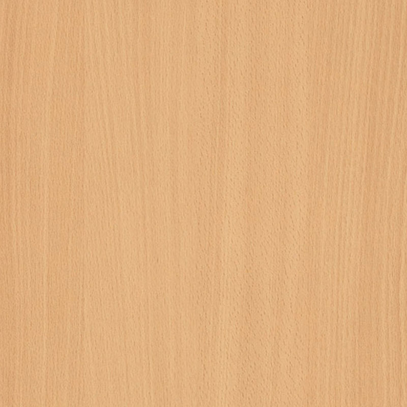

A bükk sokféleképpen hasznosítható kemény lombos faanyag, Magyarországon elsősorban az európai bükk (Fargus sylvatica) anyaga.
Közép-európai flóraelem. Hegyvidéki fafaj. Termőhelyigényes, szélsőségeket nem tűrő, a kései fagyokra érzékeny. Páradús levegőt igényel, mészkedvelő.
20-40 m magas egyenes, hengeres törzsű fa. Kérge háncsrosttól mentes, sima, szürkészöldes szinű. Kéregvastagsága 1-2 cm.
Halványsárgás, világosszürkés, rózsaszínes tónusú anyag. A szíjács és a geszt nehezen különíthető el. Az időnként előforduló vörösebarna álgeszt a fa betegségének tünete. Kis méretű, szórtan elhelyezkedő pórusai szemmel nemigen láthatók, az évgyűrűk kései pásztájában ritkábbak, ezért itt a fa sötétebb színű. Bélsugarai szélesek, 1 mm körüliek, a sugármetszeten tükröket alkotnak, a húrmetszeten vöröses kis orsókként látszanak
| Tulajdonság | Érték |
|---|---|
| rönkhossz | 10....20 m |
| rönkátmérő | 0,9...1,5 m |
| Sűrűség | 0,68 g/m3 |
| Zsugorodás sugárirányban | 5,8 % |
| Zsugorodás húrirányban | 11,8 % |
| Keménység - Rostra merőleges | 34 MPa |
| Keménység - Rostra párhuzamos | 72 MPa |
| Merevség | 14000 MPa |
| Nyomó szilárdság | 62 MPa |
| Hajlító szilárdság | 123 MPa |
| Nyíró szilárdság | 8 MPa |